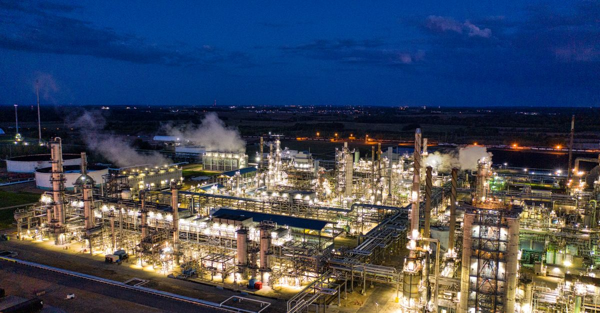
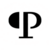
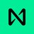
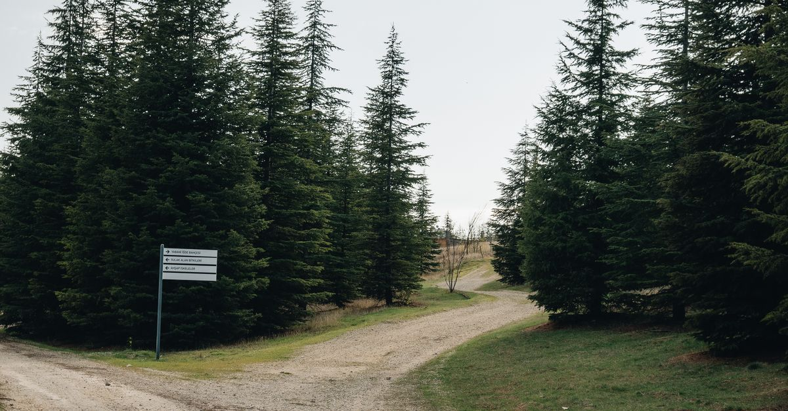

週次市場レポート2026年10月19日（月）

今週の3行まとめ
- 週足判定は初めての不合格。終値 $82,020 はライン $82,814 を −0.96% 下回り、連続合格は4週でストップ。ただし木曜の安値 $79,676 は、講師が先週お伝えした「$79,000〜80,000 への調整はありがたい下げ」ゾーンにまさにタッチして反発しました。
- CPI 3.7%・PPI 6.3% のダブル上振れ。ところが利上げ観測は「10月 約13%・12月へ集約」と沈静化し、10年金利は週 −14bp と2月以来最大の低下 — 「インフレ上振れなのに金利低下」というねじれが今週の核心です。
- 警報器は主役交代。金利が落ち着く一方で、信用スプレッドが 3.25% の新ピーク（格上げ条件2つとも成立）、原油は $90 割れどころか $100 を突破。「金利」から「信用と原油」へ警戒の軸が移りました。
| 側 | 材料 | 位置づけ |
|---|---|---|
| 弱気 | 週足終値 $82,020 で判定ライン $82,814 を初めて割れ（−0.96%）・週安値 $79,676 | 「もう底を打った」説の検証ゾーン（$77,000〜50週線）入り |
| 弱気 | 信用スプレッド 3.25% 新ピーク・11営業日連続 3% 超 | 金利低下の中でスプレッドだけ拡大 — 質の悪い組み合わせ |
| 弱気 | WTI $100 突破（週 +10%・1年 +75%）・タンカー3隻損傷 | CPI・PPI 上振れの主犯。利上げでは止めにくい種類のインフレ |
| 弱気 | アルトの下方ベータ回帰: BTC −2% の週に主要アルトは −11〜15% | 先週の「固有材料の銘柄が支える」構図は崩れた |
| 強気 | 割れ幅は −1% 未満・50週線（実測 $76,500）比 +7.2% は維持・週末 $82K 台回復 | 「ライン割れ＝即シナリオ棄却」ではない |
| 強気 | 木曜安値 $79,676 は「ありがたい下げ」ゾーンにタッチして反発・清算 $9.5億（9割ロング）の売りクライマックス形 | 講師の想定シナリオとの突合材料（本日の配信で解説） |
| 強気 | ETF 流出は前週の約 1/4 へ減速・大口保有は 2025年11月以来の高水準 | 「フローは逃げ、大口は吸収」のねじれは今週も継続 |
| 両義的 | 10年金利 5.07%（週 −14bp・2月以来最大の低下） | 金利低下自体は追い風。ただし原因が「質への逃避」なら裏腹 |
今週の一行: 「週足5連勝ならず — 終値 $82,020 で初のライン割れ、ただしザラ場は『ありがたい下げ』ゾーンにタッチして反発。CPI・PPI ダブル上振れでも金利はむしろ低下し、信用スプレッド新ピークと原油 $100 突破が残った — 警報器の主役が『金利』から『信用と原油』へ交代した週」。
答え合わせ — 薄氷はついに割れた、ただし浅瀬だった
4週続いた週足判定の合格は、今週初めて不合格になりました。ただし「割れ方」に重要な情報が詰まっています。終値の割れ幅は −1% 未満、そして木曜の急落は講師が先週示した「ありがたい下げ」ゾーンのど真ん中で止まりました。
- 判定の結果
- 初の不合格。終値 $82,020 はライン比 −$794（−0.96%）。連続合格は4週でストップしました。週間では −2.00% の下落週です。
- 割れ方の中身
- 3つの但し書きがあります。① 割れ幅は −1% 未満と小さい ② 50週移動平均線（実測 $76,500）に対しては +7.2% 上を維持 ③ 週末に $82K 台を回復して引けた。「割れた」事実と「浅く割れた」事実の両方を持ち帰ってください。
- ありがたい下げ
- 先週の配信で講師は「ここから $79,000〜80,000 へじわじわ下げて力を溜める展開はありがたい下げ」とお伝えしていました。木曜の安値 $79,676 はそのゾーンのほぼ中心です。偶然かどうかも含め、本日の配信で講師が解説します。
- シナリオの現在地
- 講師想定は「③もう底を打った」60% ／「①+② まだ下がある」40%（据え置き）。今週の実測は「③の棄却」ではなく「③の検証ゾーン（$77,000〜50週線 $76,500）入り」です。評価の更新は本日の配信で講師からお伝えします。
CPI・PPI の答え合わせ — 上振れしたのに、金利は下がった
先週予告した「答えが出るイベント」の筆頭、9月の物価統計が出ました。CPI 前年比 +3.7%（予想 3.6%）・PPI 前年比 +6.3%（予想 5.3〜5.5%）のダブル上振れ。ところが市場の着地は意外な方向でした。
- 何が出たか
- CPI は前月比 +0.6%・コア +2.6%。月次上昇の主犯はガソリン（前月比 +9.1%・前年比 +34.2%）。PPI は前月比 +1.3%（予想の約2倍超）で2022年以来の大幅上昇 — こちらも8割超がエネルギーでした。
- 市場の反応
- CPI 直後は10月利上げ観測が一時 30〜44% へ急騰し、BTC は $83.8K→$82K 台へ。PPI 直後の木曜朝には一時 $80,000 割れ（安値 $79,676）・24時間清算 約$9.5億（9割がロング）の売りクライマックスとなりました。
- 織り込みの着地
- 週末には10月利上げ 約13% へ沈静化・12月利上げへ集約（7割台半ば〜9割・集計により幅）。「年内あと1回」は12月でほぼ固まり、「年内スキップ」の線は消えました。主要行も12月 25bp 予想で揃っています（10/27-28 の FOMC は据え置き約87% 織り込み）。
- 金利はむしろ低下
- 10年金利は CPI 当日ですら前日比低下し、週間 −14bp の 5.07%（2月以来最大の低下）。インフレが上振れたのに金利が下がる — このねじれの説明は3つ: ① 上昇の主因がエネルギー＝利上げで止めにくい種類 ② 9月雇用 +2.9万人の弱さ ③ AI 企業の債務懸念による株売り→国債買い（質への逃避）。
警報器ダッシュボード — 主役が「金利」から「信用と原油」へ交代

黒い縦線が先週の位置、色付きバーが今週の位置です。先週まで主役だった①金利が一服する一方、②信用スプレッドは新ピーク・③原油は $100 突破。警戒の軸が入れ替わりました。
1987年10月19日（月）、ダウは1日で −22.6% 下落しました。その39周年の本日が同じ月曜に当たることから、SNS では「再来説」が広がっています。共通点は確かにあります — 利上げ局面のインフレ・直前の週の株安（半導体指数 −11.4%・恐怖指数は7月末以来の高さ）・原油高・レバレッジの積み上がり（米信用取引残高は前年比 +27%）。
ただし決定的な相違が4つ。① 金利の向きが真逆（1987年は直前に10年金利が7%→10%超へ急騰し逃げ場がなかった。今週はむしろ低下し、売られたお金が国債に逃げ込めている）② 1987年の教訓で株式市場にはサーキットブレーカーが導入済み（−7%/−13%/−20%で段階停止。※暗号資産は24時間・停止装置なしなので、この点だけは株より脆い）③ 実際にお金を賭けている予測市場は、年内の急落シナリオを1割未満しか織り込んでいない（恐怖はSNSに偏在）④ 記念日に予測力はない（36周年の2023年にも同じ「再来」記事が出て、何も起きませんでした）。
この週報の整理では: 「記念日だから警戒する」のではなく、地合いの脆さは上の警報器②③がすでに検出して格上げ済みです。急落の可能性はシナリオの片側（①+② 40%）として最初から確率で持っており、見るべき節目（$79,676 → $77,000 → 50週線）も決まっています。予定はなくても、準備はある — だから、やることは変わりません。
外部リサーチの視点 — 41日間未公開・「不定期アーカイブ」運用を継続
講師が定点観測している外部リサーチ（隔週レポート）は本日時点で41日間未公開となり、未公開期間の最長記録を更新中です。今週から運営者の SNS アカウントの生存確認もチェック項目に追加しました — アカウントは存続しており（プロフィール変化なし）、休刊ではなく「低頻度化」と見るのが実態に近い状況です。公開を検知したら最優先で差分をお届けします。
| 前号の枠組み | 今週までの実際 | 評価 |
|---|---|---|
| 重要サポートが耐えれば「7月安値＝底」が確定 | 週足終値が初めて判定ラインを割れ（−0.96%）・ザラ場 $79,676 | 「耐えたか」の判定が際どくなった — 次号が出れば最優先の論点 |
| 「50週線への最初の突破試行は通常失敗する」 | 終値は50週線の約 +7.2% 上（+8.6% → +7.2% へ3週連続で縮小） | 定着は維持・距離の縮小が続く |
| 「年内の追加利上げは生きている」（少数派の読み） | CPI・PPI 上振れで12月利上げが7割台半ば〜9割へ上昇 | 的中方向がさらに強まった |
| Q4 は金がビットコインに優位（リスクオフ想定） | 金 ほぼ横ばい（±1%・$4,150〜4,200圏）vs BTC 週 −2.00% | 今週も「金＞BTC」が成立（2週連続） |
複眼の確保は、他の外部識者の分析と本レポートの実測定点で代替します。BTC がザラ場で $79,676 まで下げた今、前号の「底値判定」の答え合わせは次号の最重要チェック項目です。
今週の急騰銘柄 — 3本とも「触媒不在か、イベント駆動」の固有急騰
時価総額上位100位以内で 7日間 +20% 超は今週も3件。同期間の BTC は約 −2% なので、3本とも市場連動では説明できない固有材料型です。ただし今週の共通項は先週と少し違います — 3本とも「新しいファンダ材料が確認できない」まま、需給（ショートスクイーズ・薄い板・キャンペーン）で動いています。
 Q+457%
Q+457%要因: 新発表・新上場・提携の一次ソースが確認できないままの急騰です。複数の報道が「明確なファンダ材料なし」と明言しており、主因は先物市場の過密（先物出来高が現物の約26倍・建玉が時価総額の64%）を燃料にしたショートスクイーズとみられます。
見方: 過熱の極み・逆回転リスク RSI は 93 超の極端な過熱で、取引所への大口送金（売り圧の搬入）も観測されています。「材料なしで5.6倍」が何で動いたかを言えるようにしておく — 逆回転したときの教材として観察します。

PRL+38%要因: 「AI マイニング」ナラティブのモメンタム継続。ただし今週に特定できる新規発表はなく、上場取引所が2つしかない薄い板と検索ランキング上位入りの注目度循環が主な推進力です。
見方: 技術的な反証あり・検証待ち 研究者から「主要マイニングソフトに AI 推論の実体がない」との反証が出ており、提携先のサービス上でも当該機能が確認できない状態。日次約100万枚の新規発行で今後1年で流通がほぼ倍増する供給構造も重しです。
要因: 10/13 の新規取引所上場＋ウォレット報酬キャンペーンによるイベント駆動。1ウォレットが総供給の78%・流通は総供給の15%のみという極端な低フロートが倍率装置になっています（全ソース一致で「単一のファンダ材料なし」）。
見方: 既に反落進行・11/2 が本番 ピークから −21% と失速が始まっており、11/2 に日次出来高の約7倍のロック解除が控えます。下の「アンロック3連戦」の3例目として、直前・直後を記録します。
アンロック3連戦 — 第1・第2ラウンドの答え合わせ
先週「結果を分けるのは直前の値位置と売り手の所在」と整理した3連戦。第1ラウンドの答えが出ました — 不合格です。
| 日付 | 銘柄 | 先週の形 | 結果・現在地 | 判定 |
|---|---|---|---|---|
| 10/15（木）済 |  STRK STRK | 発表直後の急騰中に突入（$0.106） | $0.10 維持に失敗。解除前に −13〜28% 急落 → 当日は投票開始の報で +25% 反発 → 続かず $0.060（週 −43%・高値比 −52%） | 期待先行テスト不合格 |
| 10/20（火）明日 |  ZRO ZRO | 8日前に単日 +16% の駆け込み形（$2.45） | 解除を待たずに剥落が前倒しで進行: 10/12 高値 $2.43 → 10/18 安値 $1.77 → 現在 $1.88（ピーク比 −23%）。買い戻しの今週分の新規実行は確認できず | 明日〜10/22 の値持ちが最終判定。$1.77 割れで「遅発剥落型」確定 |
| 11/2（月） | BTW | 最高値圏で突入見込み | 最高値 $2.77 から −21% の位置。日次出来高の約7倍の解除が接近中 | 3例目のテスト — 最警戒の教材 |
教訓の中間まとめ: 「材料が“検討・期待”のみ」の銘柄は、供給イベントを価格が越えられない — STRK がその確定例になりました。ZRO は「買い戻しという吸収装置」を持つ点が違いでしたが、その装置の稼働が確認できないまま剥落が先行しています。
講師注目銘柄フォロー（配信で言及された銘柄）
| 銘柄 | 先週 | 今週 | 状況 |
|---|---|---|---|
 LDO LDO | $0.4471 | $0.3976（−11.1%） | $0.40 も喪失。$0.4647 ラインの再々挑戦どころか一段下へ。バンド収縮から溜めた力は、今週は下方向に出ました |
 ONDO ONDO | $0.5115 | $0.4367（−14.6%） | 先週「バンド再拡張の初動に見える」とお伝えした動きは下方向への拡張（上振れはダマシ）という答えに。正直にご報告します |
| ETH | $2,552 | $2,426（約−5%） | BTC（−2%）より弱い週が継続。ETF も流出が続き、$2,500 を再び割れています |
 NEAR | $5.81 | $5.05（−13.1%） | 2週続いた逆行高が終了し、上昇分の全戻しに近い位置へ。防衛ラインの「勝ち」から一転 |
| ARB | $0.1946 | $0.1932（−0.7%） | $0.19〜0.20 ゾーン内の攻防継続（下半分に定着）。この下げ相場で横ばいは相対的には健闘 |
| MORPHO | $2.46 | $2.43（−1.2%） | 前回 Q&A 言及銘柄。主要アルトが2桁下落する中で最も底堅い1本でした |
BTC −2% の週に主要アルトが −11〜15% — 「下方ベータ」（下げ相場でアルトが増幅して下げる性質）が戻った週です。防衛ライン3本の戦績は 0勝2敗1攻防中（先週の1勝1敗1攻防から悪化）。※ 個別銘柄の記載は市場観察の記録であり、売買をすすめるものではありません。
来週に向けて — 監視ポイント

答えが出るイベント
- 明日 10/20（火）ZRO ロック解除 〜 10/22 の値持ち — 事前に −23% の前倒し剥落済み。$1.77（今週安値）割れで「遅発剥落型」確定として記録します。買い戻し再開の有無も確認。
- 今週足（10/25 日曜終値） — $82,814 の奪回か、2週連続の割れか。下の節目は $79,676（今週安値）→ $77,000 → 50週線 $76,500。2週連続割れなら「検証ゾーン」の深度評価が必要になります。
- 10/27-28（火水）FOMC — 織り込みは据え置き約87%・利上げ約13%。声明と会見で「12月利上げ」の織り込みがどう動くか。エネルギー由来のインフレを「一時的」と扱うかが焦点です。
- 10/22（木）STRK の移行投票の結果 — 可決でも価格が上がらなければ「材料出尽くし」の確定例として教材化します。
警報器の定点観測
- 最優先: 信用スプレッド — 3.25% の新ピークから 3.3% 台へ続伸するか、反落するか。格上げ後の最初の1週間
- 10年金利 5.07% — 低下継続なら「質への逃避」の深刻度を併せて点検（株指数・半導体指数とセットで）
- 原油 $100 — 定着か反落か。ホルムズ海峡の新規攻撃件数も記録継続
そのほか
- 米上場企業の月曜開示: 「BTC 購入 < 優先株買い戻し」が今週 $21.5M vs $192.4M（約9倍）と2週連続で成立。3週連続になるかを確認
- 急騰3銘柄（Q・PRL・BTW）の逆回転の有無 — 「一過性」評価の答え合わせ
- 中間選挙（11/3）直前の定点を 11/2 前後に実施（下院の政権交代予想が約85%へ上昇・上院は現状維持側が優勢に逆転 — 「ねじれ議会」想定へ重心移動）
- 外部リサーチの次号検知（公開されたら最優先で総括をお届け）
受講生の方から「CRYPTO ISHTAR（クリプトアイシュター）」というオンライン宝くじ型の案件についてご質問をいただきました。調査の結果を共有します。※本欄は特定の事業者を詐欺と断定するものではなく、受講生保護のための注意喚起です。
この案件は暗号資産プロジェクトではなく、「暗号通貨で購入するオンライン宝くじ」＋紹介報酬（MLM）の組み合わせです。調査で確認できた事実は — ①勧誘に使われている SNS アカウントは公式ではなく、リンクは公式サイトではなく LINE 友だち追加に直行する ②日本から海外の宝くじを購入する行為自体が刑法の「富くじ」規定に抵触し得る（買う側も罪に問われ得ます） ③紹介者には購入額の数%〜組織売上の最大32%の報酬があり、勧めてくる人の情報は構造的に中立ではない ④運営は海外オフショア法人で、過去に名称変更・運営法人の移転歴がある ⑤金融庁の登録はなく、トラブル時に日本の法的保護はほぼ期待できない——という内容でした。
当教室の整理: 詐欺かどうかの鑑定以前に、参加した時点で法的リスクを負い得る構造のため、関わらないことをおすすめする以前に「関われない」案件です。似た案件を見分ける5点チェックとして覚えてください — ① 紹介報酬があるか ② リンクが公式サイトでなく LINE 等に飛ぶか ③ 金融庁の登録があるか ④ 運営がオフショア法人か ⑤ 改名・運営変更の履歴があるか。2つ以上当てはまったら、その時点で距離を置くのが安全です。ご不明な案件は配信の質問会でお気軽にどうぞ。